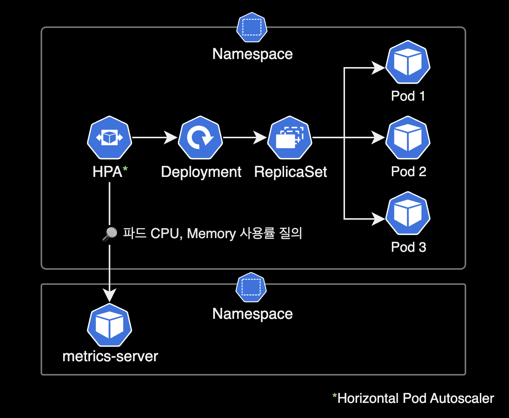
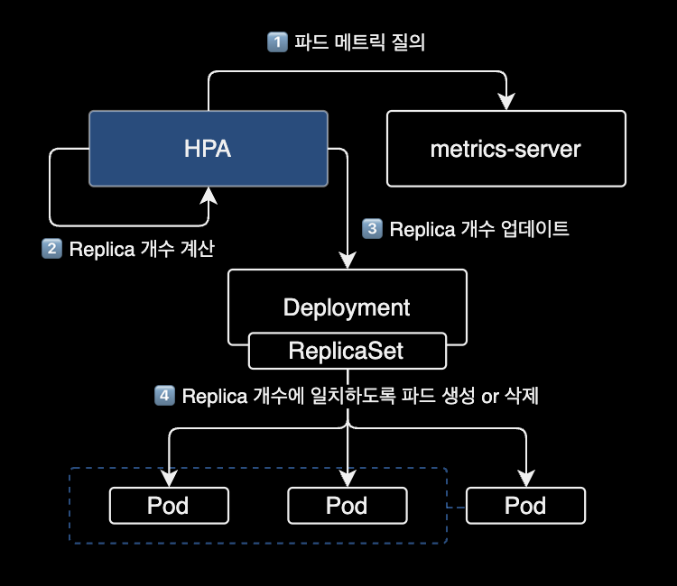

HPA targets unknown 트러블슈팅
개요
HPA가 메트릭을 수집하지 못하는 이슈에 대한 트러블슈팅 기록입니다.
이 페이지는 Kubernetes 클러스터를 운영하는 DevOps Engineer, SRE를 대상으로 작성되었습니다.
배경지식
HPA (Horizontal Pod Autoscaler)
HPAHorizontal Pod Autsocaler는 쿠버네티스 클러스터에서 자동으로 파드 수를 조정하여 애플리케이션의 리소스 사용률을 유지하도록 도와주는 리소스입니다.

보통 애플리케이션은 특정 시간대에 트래픽이 많아지거나 적어지는 경우가 발생합니다. 이 경우 수동으로 파드 수를 조정해주어야 하지만, HPA를 사용하면 이러한 상황에서도 자동으로 파드 수를 조정할 수 있습니다.
HPA는 설정한 CPU 사용률 또는 메모리 사용률에 따라 파드 수를 늘리거나 줄일 수 있습니다. 예를 들어, CPU 사용률이 일정 수준을 초과하면 HPA는 파드 수를 늘려서 애플리케이션이 더 많은 CPU를 사용할 수 있도록 합니다. 반대로 CPU 사용률이 일정 수준 이하로 떨어지면 HPA는 파드 수를 줄여서 애플리케이션이 사용하는 리소스 양을 줄입니다.
이렇게 HPA를 사용하면 애플리케이션의 트래픽 변화에 대응하여 자동으로 파드 수를 조정할 수 있으므로, 애플리케이션의 가용성과 성능을 유지하면서 리소스 사용을 최적화할 수 있습니다.
metrics-server
HPA를 사용하기 위해서는 metrics-server pod가 필요합니다.
metrics-server는 쿠버네티스 클러스터 내에서 리소스 사용률에 대한 메트릭을 수집하고 쿠버네티스 API 서버에 보내는 역할을 합니다.
환경
쿠버네티스 클러스터
- EKS v1.24
- CPU 아키텍처 : AMD64 (x86_64)
- metrics-server : 헬름 차트를 사용해서 EKS 클러스터에 metrics-server v0.6.2가 설치되어 있습니다.
$ helm list \
-n kube-system \
-l name=metrics-server
NAME NAMESPACE REVISION UPDATED STATUS CHART APP VERSION
metrics-server kube-system 1 2023-02-08 23:49:39.986446 +0900 KST deployed metrics-server-3.8.3 0.6.2
증상
어느날 EKS 클러스터에서 HPAHorizontal Pod Autoscaler를 운영하던 중 타겟 파드의 CPU 사용률을 수집 못하는 이슈를 겪었습니다.
$ kubectl get hpa -n dev
NAME REFERENCE TARGETS MINPODS MAXPODS REPLICAS AGE
demo1 Deployment/demo1 <unknown>/40% 2 20 0 13s
Horizontal Pod Autoscaler의 정보를 조회했을 때 <TARGETS>에 현재 CPU 사용률 값이 <unknown>으로 표시되는 문제가 있습니다.
kubectl top pod 명령어로 확인 시에는 정상적으로 동작하고 있습니다.
$ kubectl top pod -n dev
NAME CPU(cores) MEMORY(bytes)
demo1-5c55485f54-4s6dr 10m 205Mi
demo1-5c55485f54-7cgz2 7m 358Mi
demo1-5c55485f54-9ddw9 668m 164Mi
원인
메트릭 감시대상 Pod에 Resource 요청값(Requests), 제한값(Limits) 값이 지정되지 않았습니다.
해결방법
- Horizontal Pod Autoscaler가 감시하는 메트릭 값이 CPU or Memory 인지 여부를 확인합니다.
- 감시대상 Deployment에 CPU or Memory 리소스에 대한 requests, limits 값을 추가 설정합니다.
상세 해결기록
HPA 설정 정보
HPA의 기존 설정 정보를 확인합니다.
$ kubectl get hpa demo1 \
-n dev \
-o yaml
apiVersion: autoscaling/v2
kind: HorizontalPodAutoscaler
metadata:
name: demo1
namespace: dev
spec:
maxReplicas: 20
metrics:
- resource:
name: cpu
target:
averageUtilization: 40
type: Utilization
type: Resource
minReplicas: 2
scaleTargetRef:
apiVersion: apps/v1
kind: Deployment
name: demo1
현재 HPA가 모니터링하는 대상은 demo1 Deployment 입니다.
$ kubectl get hpa -n dev
NAME REFERENCE TARGETS MINPODS MAXPODS REPLICAS AGE
demo1 Deployment/demo1 <unknown>/40% 2 20 0 13s
현재 TARGETS 값이 <unknown> 입니다.
최근 HPA에서 발생한 이벤트 정보를 확인합니다.
$ kubectl describe hpa demo1 -n dev | grep -A 5 "^Events"
Events:
Type Reason Age From Message
---- ------ ---- ---- -------
Warning FailedGetResourceMetric 1s (x7 over 91s) horizontal-pod-autoscaler failed to get cpu utilization: missing request for cpu
Warning FailedComputeMetricsReplicas 1s (x7 over 91s) horizontal-pod-autoscaler invalid metrics (1 invalid out of 1), first error is: failed to get cpu utilization: missing request for cpu
메세지 정보를 보면 감시대상 Pod에 CPU requests 값 설정이 없기 때문에, HPA가 CPU 사용률을 조회하지 못하고 있습니다.

deployment 설정 변경
Deployment demo1 Pod에 CPU 리소스에 대한 requests와 limits 값을 지정합니다.
중요
어플리케이션 환경에 맞게 requests와 limits 값을 변경해서 명령어를 실행합니다.
$ kubectl patch deployment demo1 \
-n dev \
-p '{
"spec": {
"template": {
"spec": {
"containers": [{
"name": "demo1",
"resources": {
"requests": {
"cpu": "250m"
},
"limits": {
"cpu": "1000m"
}
}
}]
}
}
}
}'
deployment.apps/demo1 patched
명령어 실행 시 <RESOURCE_NAME> patched가 출력되면 정상적으로 설정이 변경된 것입니다.
Deployment 설정이 변경되면서 새 파드가 자동 생성됩니다.
$ kubectl get pod \
-n dev \
-l app=demo1
NAME READY STATUS RESTARTS AGE
demo1-94f9d5fc9-jnz29 2/2 Running 0 6m50s
demo1-94f9d5fc9-sgjfs 2/2 Running 0 7m21s
새로 만들어진 파드들에는 저희가 지정한 컨테이너 CPU limits, requests가 걸려있는 상태입니다.
deployment에 변경된 CPU limits, requests 부분은 실제로 다음과 같습니다.
$ kubectl get deployment demo1 \
-n dev \
-o yaml
spec:
containers:
- env:
- name: POD_NAME
valueFrom:
fieldRef:
apiVersion: v1
fieldPath: metadata.name
- name: JVM_OPT
value: -Xms64m -Xmx128m -XX:MetaspaceSize=128m -XX:ParallelGCThreads=2 -XX:MaxGCPauseMillis=500
- name: PROFILE
value: dev
image: 111122223333.dkr.ecr.ap-northeast-2.amazonaws.com/demo:demo-v1
imagePullPolicy: Always
livenessProbe:
failureThreshold: 3
httpGet:
path: /actuator/health
port: 8080
scheme: HTTP
initialDelaySeconds: 10
periodSeconds: 10
successThreshold: 1
timeoutSeconds: 5
name: demo1
ports:
- containerPort: 8080
protocol: TCP
readinessProbe:
failureThreshold: 3
httpGet:
path: /actuator/health
port: 8080
scheme: HTTP
initialDelaySeconds: 10
periodSeconds: 10
successThreshold: 1
timeoutSeconds: 5
resources:
+ # HPA의 메트릭 수집을 위한 resources 정보 추가
+ limits:
+ cpu: 1024m
+ requests:
+ cpu: 250m
spec.resources.limits.cpu, spec.resources.requests.cpu가 저희가 지정한 값으로 적용된 걸 확인할 수 있습니다.
주의사항
컨테이너의 limits 값을 부족하게 잡을 경우, Pod 생성이 실패하며 CrashLoopBackOff가 발생할 수 있습니다.
$ kubectl get pod -n dev
NAME READY STATUS RESTARTS AGE
demo1-545d7f94f8-cxdq2 1/2 CrashLoopBackOff 5 (14s ago) 4m54s
demo1-545d7f94f8-gmxwd 1/2 CrashLoopBackOff 5 (21s ago) 4m54s
제 경우 컨테이너 리소스 부족으로 인해 Liveness, Readiness Probe를 체크하는 과정에 실패한 후 CrashLoopBackOff를 겪었습니다.
$ kubectl describe pod demo1-545d7f94f8-cxdq2 -n dev
...
Warning Unhealthy 4m11s (x4 over 4m51s) kubelet Liveness probe failed: HTTP probe failed with statuscode: 500
Warning Unhealthy 4m11s (x5 over 4m51s) kubelet Readiness probe failed: HTTP probe failed with statuscode: 500
Warning BackOff 10s (x4 over 38s) kubelet Back-off restarting failed container
...
kubectl describe 명령어로 최근 이벤트 정보를 확인한 결과입니다. Liveness probe와 Readiness Probe 체크를 실패한 걸 확인할 수 있습니다.
이를 해결하기 위해 초기 limits.cpu 값을 512m로 했으나, 1024m로 늘린 후 파드가 정상적으로 생성되는 걸 확인했습니다.
결과 확인
$ kubectl get hpa -n dev
NAME REFERENCE TARGETS MINPODS MAXPODS REPLICAS AGE
demo1 Deployment/demo1 248%/40% 2 20 2 2m16s
이후 정상적으로 TARGETS 값에 현재 CPU 사용률이 표시되는 걸 확인할 수 있습니다.
참고자료
k8s HPA TARGETS CPU unknown 현상 해결
위 글을 참고해서 해결했습니다.
Kubernetes Resource Request와 Limit의 이해
쿠버네티스의 request와 limit 설정을 잘 설명한 글입니다.
EKS 환경에서 metrics-server 설치 가이드
AWS 공식문서로 kubectl apply를 사용해서 설치하는 방식을 설명하고 있습니다.
kubecost의 HPA 설명문서
그림으로 표현된 HPA 동작방식을 보시면 이해하기 쉽습니다.